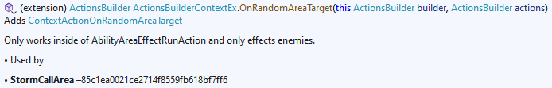

How to Contribute
Contributions are welcome!
- Fork the Project Repo
- Setup the project
- Make your changes in the forked repo
- Submit a Pull Request
- Keep in mind the Pull Request Requirements
If you're confused by the configuration overrides don't want to contribute directly, feel free to file a GitHub Issue. Share what game type you're working with and whatever information you have on its usage, as well as any difficulties you had working with it.
What to Contribute
Knowledge of Game Types
Possibly the most helpful contribution you could provide! If you are familiar with the usage of game types, specifically any Condition, GameAction, BlueprintComponent, or BlueprintScriptableObject, you can improve the Builder and Configurator APIs and documentation.
Examples contributions:
- Remarks on behavior of game types or the relationship between field values
AbilityEffectMissneeds to be added after anotherAbilityApplyEffector it will always trigger.
- Indicating which fields for a game type are required or can be ignored
- The
AddFactscomponent must setm_Facts.
- The
- Customizing the API to reflect more complex interactions such as constant fields or related fields
- The
AddContextStatBonusfieldHasMinimalshould be true whenMinimalis set and false otherwise.
- The
- Adding validation of blueprint or component configuration
BlueprintAbilitycan only have oneAbilityDeliverEffectcomponent
Most of these are accomplished through configuration overrides or hardcoded overrides. Validation is handled by classes within the BlueprintCore.Utils.Validation namespace. Some configurator API changes require implementing a custom configurator class.
The sections below explain how to make these changes and provide examples already in use.
Using Configuration Overrides
The Blueprint configurator, ActionsBuilder, and ConditionsBuilder APIs are automatically by iterating over types in the game assembly generating methods and classes to construct those types. This is handled by the BlueprintCoreGen and customized through JSON config files and static rules in the Overrides package:
- Actions
- Each file supports an ActionsBuilder extension class, e.g.
AreaActions.json - The config determine which actions belong in that extension class as well as custom handling for those actions
- Each is a
ConstructorMethod, defined in MethodOverrides
- Each file supports an ActionsBuilder extension class, e.g.
- Blueprints
Blueprints.jsonsupports overrides for handling blueprint fields in configurator classes- Each entry is a
BlueprintOverride, defined in Configurators
- Each entry is a
Components.jsonsupports overrides for handling BlueprintComponent methods- Each entry is a
ConstructorMethod, defined in MethodOverrides
- Each entry is a
ComponentsAllowedOn.jsonoverrides which Blueprint types a given component can be used on- Each entry is a
ComponentsAllowedOnOverride, defined in Configurators
- Each entry is a
- Conditions
- Each file supports a ConditionsBuilder extension class, e.g.
AreaConditions.json - The config determine which conditions belong in that extension class as well as custom handling for those conditions
- Each entry is a
ConstructorMethod, defined in MethodOverrides
- Each file supports a ConditionsBuilder extension class, e.g.
- Examples
- Each file is a generated list of usage examples for game types
Examples.csis not automatically generated; it contains hand selected examples
- Ignored
- Each file is a generated list of types to ignore
Ignored.csis not automatically generated; it contains hand selected fields and game types to ignore
- Fields.json
- Overrides for specific fields which apply to all inherited types
- Each entry is a
FieldOverride, defined in ParameterOverrides
- FieldTypes.json
- Overrides for handling specific game types
- Each entry is a
FieldTypeOverride, defined in ParameterOverrides
The sections below demonstrate how to use the configuration overrides for specific changes. Once you have your configuration override ready to test see Using BlueprintCoreGen.
Adding Remarks
Works On: Actions, Blueprint Components, Conditions, Blueprint Fields
For actions and conditions find the corresponding entry in one of the config files, e.g. ContextActions.json:
{
"TypeName": "ContextActionArmorEnchantPool",
"Remarks": [
"The caster's armor is enchanted based on its available enhancement bonus. e.g. If the armor can be enchanted to +4 and has a +1 enchantment, enchantmentPlus3 is applied."
],
...
},
Remarks is defined as a list of strings, each of which is wrapped in paragraph tags. The result:

For a component either find an existing entry in Components.json or add a new one:
{
"TypeName": "AbilityVariants",
"Remarks": [
"This ability should be the parent as defined in <see cref=\"BlueprintAbility.m_Parent\"/> for each variant.",
"If you remove a variant be sure to clear <see cref=\"BlueprintAbility.m_Parent\"/> for that ability. You can set it to <c>BlueprintTool.GetRef<BlueprintAbilityReference>(null)</c>."
]
}
For a blueprint field find an existing entry in Blueprints.json or add a new one:
{
"TypeName": "BlueprintBuff",
"Fields": [
{
"FieldName": "Stacking",
"Remarks": [
"Use <see cref=\"SetRanks(int)\"/> for StackingType.Rank."
]
}
]
}
Marking Fields Required or Ignored
Works On: Actions, Blueprint Components, Conditions
For actions and conditions find the corresponding entry in one of the config files, e.g. ContextConditions.json:
{
"TypeName": "ContextConditionHasFact",
"RequiredFields": [ "m_Fact" ]
},
RequiredFields is a list of field names which will be required parameters in the generated method. The result:

Example of ignoring a field in ContextActions.json:
{
"TypeName": "ContextActionOnRandomAreaTarget",
"Remarks": [ "Only works inside of AbilityAreaEffectRunAction and only effects enemies." ],
"RequiredFields": [ "Actions" ],
"IgnoredFields": [ "OnEnemies" ]
},
IgnoredFields is a list of field names which will not be exposed as parameters in the generated method. The result:

For components find an existing entry in Components.json or add a new one:
{
"TypeName": "AbilityCasterAlignment",
"RequiredFields": [ "alignment" ]
},
Handling Related Fields
Works On: Actions, Blueprint Components, Conditions
A common pattern in game types is a boolean field which indicates whether to use another field. This can be handled by using ignored fields and custom fields, e.g. in Components.json:
{
"TypeName": "AddContextStatBonus",
"RequiredFields": [ "Stat", "Value" ],
"IgnoredFields": [ "HasMinimal" ],
"CustomFields": [
{
"FieldName": "Minimal",
"ExtraAssignmentFmtLines": [ "{0}.HasMinimal = {1} is null;" ]
}
]
},
The resulting method accepts a parameter for Minimal but not HasMinimal. Internally HasMinimal will be set based on whether Minimal is specified. Here is the resulting method:
public TBuilder AddContextStatBonus(
StatType stat,
ContextValue value,
ModifierDescriptor? descriptor = null,
Action<BlueprintComponent, BlueprintComponent>? merge = null,
ComponentMerge mergeBehavior = ComponentMerge.Fail,
int? minimal = null,
int? multiplier = null)
{
var component = new AddContextStatBonus();
component.Stat = stat;
component.Value = value;
component.Descriptor = descriptor ?? component.Descriptor;
component.Minimal = minimal ?? component.Minimal;
component.HasMinimal = minimal is null;
component.Multiplier = multiplier ?? component.Multiplier;
return AddUniqueComponent(component, mergeBehavior, merge);
}
The CustomFields config is a list of fields by name customized using the CustomField class in ParameterOverrides.
ExtraAssignmentFmtLines is a list of format strings inserted after the field operation in the generated method. See CustomField for full documentation.
Splitting Methods
Works On: Actions, Blueprint Components, Conditions
Some game types implement several distinct uses, each requiring different configurations. For example, ContextActionApplyBuff can be used to apply a value with different durations. The resulting override generates three distinct methods:
{
"TypeName": "ContextActionApplyBuff",
"RequiredFields": [ "m_Buff" ],
"Methods": [
{
"MethodName": "ApplyBuffPermanent",
"IgnoredFields": [ "DurationSeconds", "DurationValue" ],
"ConstantFields": [
{
"FieldName": "UseDurationSeconds",
"Value": "false"
},
{
"FieldName": "Permanent",
"Value": "true"
}
]
},
{
"MethodName": "ApplyBuffWithDurationSeconds",
"RequiredFields": [ "DurationSeconds" ],
"IgnoredFields": [ "DurationValue" ],
"ConstantFields": [
{
"FieldName": "UseDurationSeconds",
"Value": "true"
},
{
"FieldName": "Permanent",
"Value": "false"
}
]
},
{
"MethodName": "ApplyBuff",
"RequiredFields": [ "DurationValue" ],
"IgnoredFields": [ "DurationSeconds" ],
"ConstantFields": [
{
"FieldName": "UseDurationSeconds",
"Value": "false"
},
{
"FieldName": "Permanent",
"Value": "false"
}
]
}
]
},
Methods is a list of method overrides, each of which generates a single method. Notice that RequiredFields is defined in the root override; anything defined in the root applies to all methods. In this case, m_Buff is a required parameter for all generated methods.
The resulting code:
public static ActionsBuilder ApplyBuffPermanent(
this ActionsBuilder builder,
Blueprint<BlueprintBuffReference> buff,
bool? asChild = null,
bool? isFromSpell = null,
bool? isNotDispelable = null,
bool? sameDuration = null,
bool? toCaster = null)
{
var element = ElementTool.Create<ContextActionApplyBuff>();
element.m_Buff = buff?.Reference;
element.AsChild = asChild ?? element.AsChild;
element.IsFromSpell = isFromSpell ?? element.IsFromSpell;
element.IsNotDispelable = isNotDispelable ?? element.IsNotDispelable;
element.SameDuration = sameDuration ?? element.SameDuration;
element.ToCaster = toCaster ?? element.ToCaster;
element.Permanent = true;
element.UseDurationSeconds = false;
return builder.Add(element);
}
public static ActionsBuilder ApplyBuffWithDurationSeconds(
this ActionsBuilder builder,
Blueprint<BlueprintBuffReference> buff,
float durationSeconds,
bool? asChild = null,
bool? isFromSpell = null,
bool? isNotDispelable = null,
bool? sameDuration = null,
bool? toCaster = null)
{
var element = ElementTool.Create<ContextActionApplyBuff>();
element.m_Buff = buff?.Reference;
element.DurationSeconds = durationSeconds;
element.AsChild = asChild ?? element.AsChild;
element.IsFromSpell = isFromSpell ?? element.IsFromSpell;
element.IsNotDispelable = isNotDispelable ?? element.IsNotDispelable;
element.SameDuration = sameDuration ?? element.SameDuration;
element.ToCaster = toCaster ?? element.ToCaster;
element.Permanent = false;
element.UseDurationSeconds = true;
return builder.Add(element);
}
public static ActionsBuilder ApplyBuff(
this ActionsBuilder builder,
Blueprint<BlueprintBuffReference> buff,
ContextDurationValue durationValue,
bool? asChild = null,
bool? isFromSpell = null,
bool? isNotDispelable = null,
bool? sameDuration = null,
bool? toCaster = null)
{
var element = ElementTool.Create<ContextActionApplyBuff>();
element.m_Buff = buff?.Reference;
builder.Validate(durationValue);
element.DurationValue = durationValue;
element.AsChild = asChild ?? element.AsChild;
element.IsFromSpell = isFromSpell ?? element.IsFromSpell;
element.IsNotDispelable = isNotDispelable ?? element.IsNotDispelable;
element.SameDuration = sameDuration ?? element.SameDuration;
element.ToCaster = toCaster ?? element.ToCaster;
element.Permanent = false;
element.UseDurationSeconds = false;
return builder.Add(element);
}
These methods ensure ContextActionApplyBuff is properly configured for the duration desired.
Note the usage of ConstantFields to mark fields such as Permanent to a constant value based on the method.
Further Customizing Methods
The extent of configuration is defined in the various override classes. Supported customization includes:
- Adding required imports
- Adding extra method parameters
- Specifying defualt values
- Specifying field nullability
- Specifying parameter comments
- Customizing the assignment statement
- Adding additional lines of code
- Overriding blueprint field methods
- Renaming parameters or methods (use sparingly)
Here's a complex example from ContextActions.json:
{
"TypeName": "ContextActionArmorEnchantPool",
"Remarks": [
"The caster's armor is enchanted based on its available enhancement bonus. e.g. If the armor can be enchanted to +4 and has a +1 enchantment, enchantmentPlus3 is applied."
],
"Imports": [
"BlueprintTool",
"BlueprintArmorEnchantment",
"BlueprintArmorEnchantmentReference",
"BlueprintItemEnchantmentReference",
"ArmorEnchantmentRefs"
],
"RequiredFields": [ "EnchantPool", "DurationValue" ],
"IgnoredFields": [ "m_DefaultEnchantments" ],
"ExtraParams": [
{
"ParamName": "enchantmentPlus1",
"TypeName": "Blueprint<BlueprintArmorEnchantmentReference>?",
"CommentFmt": "Defaults to TemporaryArmorEnhancementBonus1",
"DefaultValue": "null",
"OperationFmt": [
"{0}.m_DefaultEnchantments[0] = enchantmentPlus1?.Cast<BlueprintItemEnchantmentReference>()?.Reference ?? ArmorEnchantmentRefs.TemporaryArmorEnhancementBonus1.Cast<BlueprintItemEnchantmentReference>().Reference;"
]
},
{
"ParamName": "enchantmentPlus2",
"TypeName": "Blueprint<BlueprintArmorEnchantmentReference>?",
"CommentFmt": "Defaults to TemporaryArmorEnhancementBonus2",
"DefaultValue": "null",
"OperationFmt": [
"{0}.m_DefaultEnchantments[1] = enchantmentPlus2?.Cast<BlueprintItemEnchantmentReference>()?.Reference ?? ArmorEnchantmentRefs.TemporaryArmorEnhancementBonus2.Cast<BlueprintItemEnchantmentReference>().Reference;"
]
},
{
"ParamName": "enchantmentPlus3",
"TypeName": "Blueprint<BlueprintArmorEnchantmentReference>?",
"CommentFmt": "Defaults to TemporaryArmorEnhancementBonus3",
"DefaultValue": "null",
"OperationFmt": [
"{0}.m_DefaultEnchantments[2] = enchantmentPlus3?.Cast<BlueprintItemEnchantmentReference>()?.Reference ?? ArmorEnchantmentRefs.TemporaryArmorEnhancementBonus3.Cast<BlueprintItemEnchantmentReference>().Reference;"
]
},
{
"ParamName": "enchantmentPlus4",
"TypeName": "Blueprint<BlueprintArmorEnchantmentReference>?",
"CommentFmt": "Defaults to TemporaryArmorEnhancementBonus4",
"DefaultValue": "null",
"OperationFmt": [
"{0}.m_DefaultEnchantments[3] = enchantmentPlus4?.Cast<BlueprintItemEnchantmentReference>()?.Reference ?? ArmorEnchantmentRefs.TemporaryArmorEnhancementBonus4.Cast<BlueprintItemEnchantmentReference>().Reference;"
]
},
{
"ParamName": "enchantmentPlus5",
"TypeName": "Blueprint<BlueprintArmorEnchantmentReference>?",
"CommentFmt": "Defaults to TemporaryArmorEnhancementBonus5",
"DefaultValue": "null",
"OperationFmt": [
"{0}.m_DefaultEnchantments[4] = enchantmentPlus5?.Cast<BlueprintItemEnchantmentReference>()?.Reference ?? ArmorEnchantmentRefs.TemporaryArmorEnhancementBonus5.Cast<BlueprintItemEnchantmentReference>().Reference;"
]
}
]
},
Internally ContextActionArmorEnchantPool has an array for enchantments but in practice only 5 entries are usable. To represent this five extra parameters are included with defaults chosen based on existing game blueprints.
Field Type Behavior
Some field types need global handling overrides. In that case you can edit FieldTypes.json.
You can apply a variety of changes:
- Replace with an alternate type
- Useful if you have a utility or wrapper class such as
ActionsBuilderin place ofActionList
- Useful if you have a utility or wrapper class such as
- Control whether the field is validated
- Change the assignment syntax
- Change the null handling behavior
- Add imports
Here is the override for ActionList:
{
"TypeName": "ActionList",
"TypeNameOverride": "ActionsBuilder",
"Imports": [ "ActionsBuilder" ],
"AssignmentFmtRhs": "{0}?.Build()",
"AssignmentIfNullRhs": "Utils.Constants.Empty.Actions"
},
This results in every method requiring an ActionList requesting an ActionsBuilder. If nothing is provided Utils.Constants.Empty.Actions is assigned to prevent NPEs.
Most commonly these overrides are useful for types which should never be null such as PrefabLink:
{
"TypeName": "PrefabLink",
"AssignmentIfNullRhs": "Utils.Constants.Empty.PrefabLink"
}
This ensure even if the type's default field value is null it will be set to Utils.Constants.Empty.PrefabLink.
Hardcoded Overrides
There are a few hardcoded overrides:
- GlobalOverrides
CustomBlueprintConfiguratorsused in conjunection with Custom ConfiguratorsTypeNameOverridesoverrides the type name used for field types; useful when you run into type name conflicts in a fileParamNameOverridesoverrides the name of a field as a parameter; useful for field names such asm_Defaultwhich generate a C# keyword for their parameter name
- Examples
ManualExamplesdefines manual examples
- Ignored
IgnoredFieldsdefines fields to ignore by type (checked with inheritance)IgnoredTypesdefines types to ignore entirely when generating code
Validation
Validation code is defined in the BlueprintCore.Utils.Validation package.
AttributeValidatorchecks fields annotated using Owlcat's attributes for conformance- This should not need changes unless Owlcat implements a new attribute
BlueprintValidatorchecks blueprints for configuration problems- Use this to check for required or illegal configurations in a blueprint
- For example
BlueprintAbilityusage ofAbilitycomponents is validated
- For example
- Add type specific logic to an override of the
Checkmethod, e.g.Check(BlueprintAbility, ValidationContext)
- Use this to check for required or illegal configurations in a blueprint
ComponentValidatorchecks blueprint components for configuration problems- Add type specific logic to an override of the
Checkmethod
- Add type specific logic to an override of the
ElementValidatorchecks element types for configuration problems- This should not need changes
Custom Configurators
Blueprint configurators are implemented using a tree inheritance structure and the curiously recurring template pattern. A limitation of this pattern is that concrete configurator implementations cannot inherit from another concrete configurator, since it breaks the return type for the methods.
To implement a custom configurator (i.e. replace an existing concrete configurator) you need to:
- Create your configurator class and add it to
BlueprintCore.Blueprints.CustomConfigurators- Use the same class declaration as the generated configurator
- Update GlobalOverrides
- Add the type of blueprint configurator to
CustomBlueprintConfigurators
- Add the type of blueprint configurator to
When creating a custom configurator:
- Keep the same relative namespace as the generated configurator
- Provide static constructors
- All configurators should have the
For(blueprint)constructor for creating based on existing blueprints - Unless your configurator enforces specific inputs for creating a new blueprint, implement the
New(name, guid)constructor- New blueprint constructors must call
BlueprintTool.Create<>(name, guid)
- New blueprint constructors must call
- All configurators should have the
- Return the configurator in every method to support method chaining
- Do not modify the blueprint directly; use
OnConfigureInternal() - Use
<inheritdoc/>where possible
Look at AbilityConfigurator.cs as an example.
Notice the declaration of SetCustomRange():
public new AbilityConfigurator SetCustomRange(Feet rangeInFeet)
The use of new is intentional because it overrides the generated method for SetCustomRange() defined in the base configurator for BlueprintAbility.
Actions, Conditions, and Components
TODO
Utilities
Add utility classes to the BlueprintCore.Utils package or a subpackage. Be sure to update intro.md to include a brief description of the utility.
What Not to Contribute
BlueprintCore is not the appropriate library for:
- Game content or behavior changes
- Bugfixes
- Anything requiring a harmony patch
If you have a very good reason for including a harmony patch let me know and we can discuss. The problem with patching is that multiple copies of the patch will be installed if multiple mods use BlueprintCore. As a result patches must be carefully implemented to function properly.
Local Project Setup
- Install NuGet Packages
- Configure Environment Variables
WrathPathenvironment variable must be the root installation directory for the game- Usually this is
C:\Program Files (x86)\Steam\steamapps\common\Pathfinder Second Adventure
- Usually this is
- Clean the project
- This copies the dependent assemblies to the project directory and publicizes Assembly-CSharp
- Note that you should already have Unity Mod Manager installed
- Configure Hard Links
- Delete the
docsfolder in the root directory - Open an admin command promt, navigate to the solution's directory, and run the following commands:
mklink /j docs BlueprintCore\_site
- This is needed to update documentation when building changes
- Delete the
Note: It is recommended to build using the Debug configuration. The Release configuration generates documentation which takes several minutes.
Testing Changes
Pull Request Requirements
- Change Description
- What was modified, removed, or added?
- Why is the change needed?
- Add/Update Unit Tests Ignore this currently, Unit Test project needs to be fixed.
- Generated code does not need unit tests
- Code Style
- Limit lines to 120 characters
- Relaxed for comments, especially comments with long links
- 2 Space Indents
- Always use braces, even for one line statements
- Stay consistent with existing code and prefer common C# styling otherwise
- Remove unused and sort usings
- Limit lines to 120 characters
- Documentation
- Use XML style comments to document classes and public methods
- Explain what it's for, how to use it, and any constraints on inputs
- Consider including examples using the
<example>tag
- Use XML style comments to document classes and public methods
- No Patches
- Harmony patches are not allowed since the library may be included in multiple mods.
- If you really want to add a patch, contact me to explain why. Note that it will have to be idempotent, i.e. function correctly if applied multiple times
- Before Committing
- Rebuild the solution using the Release configuration to update documentation
- Run all unit tests
- Note: If tests throw exceptions when adding blueprints from TestData just re-run them. There is an issue with static data sticking around that I have not been able to resolve.
Using BlueprintCoreGen
BlueprintCoreGen is the tool responsible for generating the ActionsBuilder, ConditionsBuilder, and Blueprint configurator classes. It can execute in one of two modes: Analysis and Code Generation. In both modes be sure to run it in Debug configuration.
Analysis
Analysis is usually only needed to be run after the game patches so you probably don't need to use it. If you want to anyways:
- Set
RunTypeUsageAnalysistotruein Program.cs - Run the program
Once it is completed check the output directory (bin/debug/net5.0). There should be a folder titled Analysis which contains eight files:
- ExampleBlueprintComponents.cs
- ExampleBlueprintScriptableObjects.cs
- ExampleConditions.cs
- ExampleGameActions.cs
- IgnoredBlueprintComponents.cs
- IgnoredBlueprintScriptableObjects.cs
- IgnoredConditions.cs
- IgnoredGameActions.cs
- Copy the four
Example*.csfiles into the project folderCodeGen/Overrides/Example - Copy the four
Ignored*.csfiles into the project folderCodeGen/Overrides/Ignored
Known Issue: You may have to replace a few type references with fully qualified type names due to naming conflicts.
Code Generation
If you make changes to how code is generated or modify one of the *.json config files in the Overrides directory, you'll need to run Code Generation.
- Set
RunTypeUsageAnalysistofalsein Program.cs - Run the program
- Once it completes, navigate to the output directory (
bin/debug/net5.0) and executeUpdateCodeGen.ps1- This must be executed from the output directory
Make sure that BlueprintCore builds, then remove unused using statements. Here is a quick guide to doing this in Visual Studio.
After making updates you can run the code generation directly in visual studio. Once it completes the output is in bin/<Release|Debug>/net5.0/: